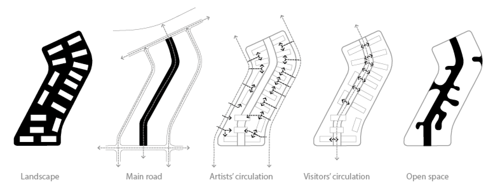
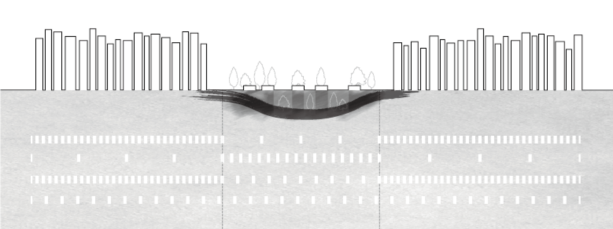
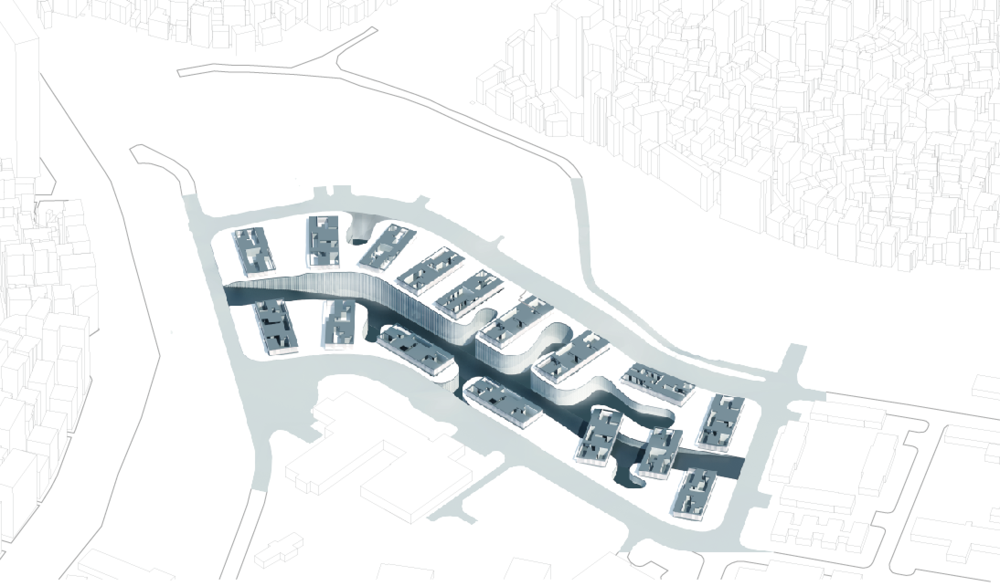
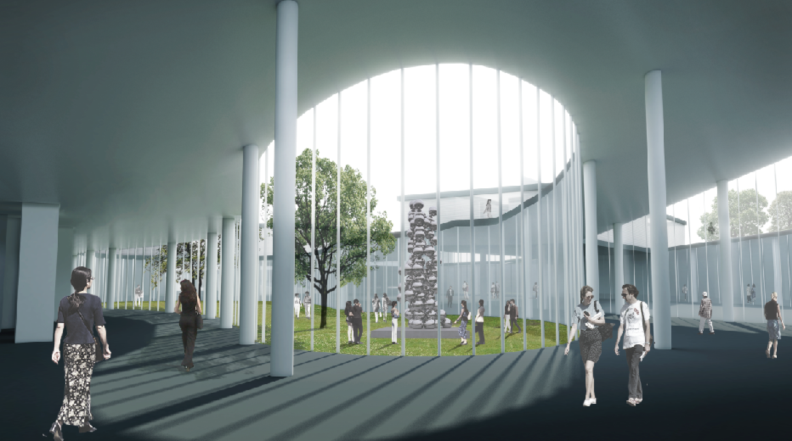

On August 10th, 2006, Camp Hialeah was formally returned to Busan Metropolitan City and was opened to the public in April of 2010. Camp Hialeah is a former Imperial Japanese Army base and United States Army camp located in the Busanjin district of the city of Busan, South Korea. The camp was closed and stopped in its urbanization process for the last 100 years, while the city of Busan continued growing and eventually surrounded the camp, creating a kind of independent land within the city. Now, citizens have the chance to regain this land and its historic modern buildings.
The Renovation of Camp Hialeah project aimed to pre- serve valuable modern buildings and provide new places for the city’s arts-based community.
In contrast with the surrounding dense high-rise buildings, the camp contained single story buildings spread sparsely. This distribution opened the possibility that the camp could become a park for citizens. Therefore, I planned to make underground spaces so as to provide citizens with resting spaces (existing spaces) and community spaces (renovated spaces), while also preserving the modern buildings.
A main road across the site has two important functions: connecting the camp with the city and providing underground spaces for natural light. The road connects with the main street of the city, which helps Hialeah to be absorbed in the city of Busan by providing easy access for people visiting it. In addition, it connects with the lowest floor, so it is possible for sunlight to penetrate into the interior space.
The existing buildings (military installations) will be turned into ateliers for artists, and underground spaces will be utilized for exhibitions. Since the existing buildings in Camp Hialeah were used for military purposes, most of them were rigid and closed. In contrast, I intended for the renovated spaces to have a more organic and open shape. Organic-shaped open spaces were made in the spots of active communication and they serve as resting places for citizens.

The old and new can work together, enabling people to reminisce about the old times and enjoy the new places. Organic-shaped open spaces provide under- ground spaces with warmth and light. The open places will be available for a variety of events, art performan- ces, and galleries. These places are built to encourage active community participation among artists, perfor- mers and other citizens, which will help the camp in its transformation into a hub for communication and creativity.
Organic shaped open spaces provides undergr- ound spaces with warmth and light. The open places will be available for a variety of events, art performances, and gallery. The places might encourage active community particiption of ar- tists, performer and any citizens, which might help the camp convert into communiction places.